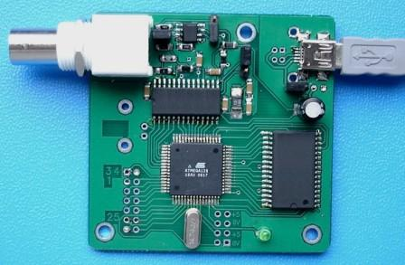
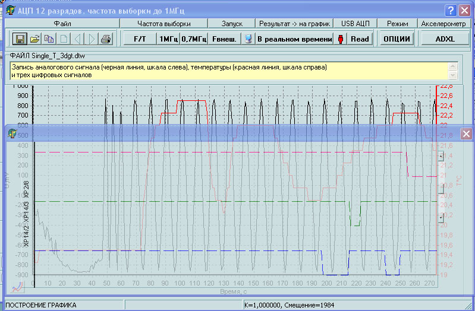
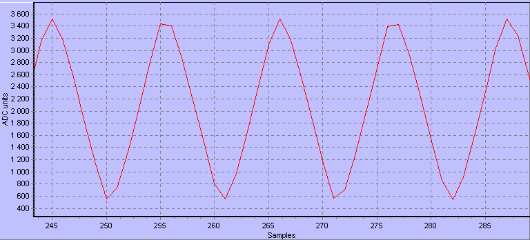
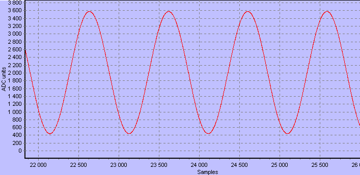
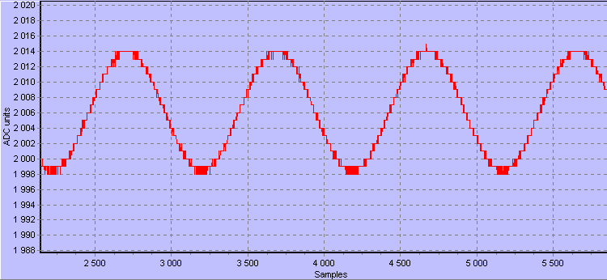
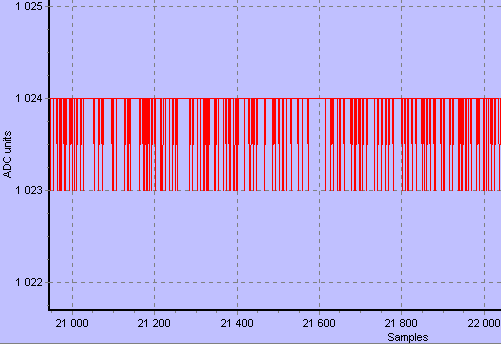
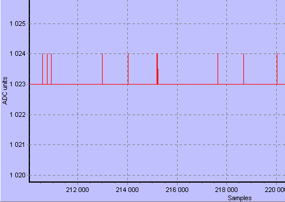

Bipolar (±1 V /±2.5 V) or unipolar (0...-2 V, 0...-5 V or 0...+2 V, 0...+5 V) signal. Controlled sampling frequency/accumulation time. Internal/external clock source for ADC samples. At max sampling frequency of 1.053 MHz, 30000 samples are recorded; at sampling frequencies of 702 kHz and lower, 240000 12-bit samples are recorded into the memory located on the board.
In any of the operation modes, in parallel with the analog signal recording, 3 digital signals are recorded, which can be displayed on the graph.
Start from computer or by external signal.
Connection
of a dual-axis
accelerometer ADXL202 (up to 2 g) or ADXL210 (up to 10 g).
you can learn
more about the operation of the
12-bit ADC
by
reading the HELP file
Application:
-possibility of
entering
conversion coefficients for devices connected by the
user, axis names
(by connecting your sensor, for example, a speed
sensor, you will be able to display speed on the graph
instead of the voltage measured by the ADC)
-documentation - the coefficients entered by you for the sensor connected to the
ADC and the name of the parameter measured by the sensor will be saved
in the data file, it is possible to save data
or fragments into a text file
-the original display of digital signals
allows observing them at any change of the
graph scale without mutual overlapping and
without interference for viewing the analog signal at
any scale change,
The presence of 512 KB memory, the possibility of autonomous operation (when battery powered), allows installing the ADC, for example, on a moving object where it is impossible to place a personal computer or laptop; the results can be read at the end of the recorded process by connecting the ADC to a computer.
Connection of a dual-axis accelerometer ADXL202 (ADXL210) is provided, which allows measuring accelerations along two axes, as well as calculating the tilt angle of the object on which the accelerometer is mounted.

maximum sampling frequency is 1.053 MHz, at which 30000 samples are recorded
at frequencies of 702 kHz and lower, 30000xN samples are recorded (where N is from 1 to 8). The sampling frequency/measurement time, as well as the number of samples, are determined by the user.
Data
is accumulated in the
512 K x 8 memory, then
transmitted to a computer for storage and display. The transmission time for 240000
samples (480000 bytes) is no more than 7 s.
The computer
application allows viewing the graph,
saving data, adding comments, viewing saved
data, copying graphs for insertion into Word, as well as saving
selected graph fragments in text format.
The sampling clock signal can be generated both by the controller and by an external device (internal and external clock modes).
Three jumpers provide the selection of the analog signal range ( 0...-2 V, 0...-5 V, 0...+2 V and 0...+5 V for unipolar, -1 V..+1 V or -2.5 V...+2.5 V for bipolar signal).
One connector of the device provides the connection of a signal cable.
The second connector can transmit
-an external clock signal to the controller - when operating in the external clock mode
-pulses from the controller that clock the ADC samples
Power supply is via USB cable from the
computer;
power supply from an external +5 V source is also possible,
consumption is 60 mA.
It is possible to power the controller from a 4.5 V battery, the consumption will be 50 mA,
with a possible slight clipping of a strong signal from above.
Connection of dual-axis
(or single-axis) accelerometers with
pulse-width modulated outputs ADXL202 (measures
acceleration up to 2 g), ADXL210 (up to 10 g) is provided.
Connection of a
DS18B20 temperature sensor is provided.
Real-time operation mode - once
a second
a measurement is performed, the result of which is output to the graph in
real time; in parallel, the temperature value can be output to the graph.
Control of external objects via 2
output
lines according to conditions specified by the user, depending on the level of
the measured signal and temperature.
A BootLoader is located in the microcontroller memory -
a loader that allows the user to independently record
updated programs into the microcontroller memory via USB. The corresponding computer software is also supplied.
It is possible to add a mode for starting conversion when the signal level is exceeded, as well as when the signal gradient exceeds a software-defined threshold
The controller
can be
used as a high-resolution storage oscilloscope. It is possible to organize
the recording of up to ten digital signals.
You can download the archive with the Application (update 20.12.2008), this will allow you to view the files located in the Data Archive, recorded by the 12-bit ADC (signals from an accelerometer on a swinging calibrator, as well as signals when measuring vibrations during a launch by a ballistic gravimeter, etc.). The Help file available in the Application archive will help you familiarize yourself with the features of the program.
Working with the application graphs (scaling, moving fragments) in the tutorial video .Real-time measurement
measurements
are performed once a second,
their results are output to the graph in real time
the red line is the temperature graph,
in the lower window are the graphs of digital
signals
It is
Horizontal alignment of the windows is provided during
the measurement, including when the scale is changed by the user. During the measurement, the window with digital
signals
can be, if necessary,  For a detailed view of the graph,
the scale can be
increased without stopping the measurements. Upon completion of the measurements, the result
can be saved to a
file. When plotting graphs from the file data, they are placed in
a single window.
.      ________________________ 1.)
Is it possible to put the ADC board on a small
moving object without a computer, start
the measurement, and then connect a computer and
read the recorded data from the board's memory?
I want to connect the ADC to a speed sensor,
power them from a battery, put it in a
container that will move,
start the measurement (preferably
remotely), and read the data after the movement. ________________________ Yes,
to do this, use the latest version of the
Application (update
20.12.2008),
a Read button has been added to the START panel. Sequence of actions: -remove the ADC USB power jumper (J4) -solder wires to the +5 and 0 V contacts; a +4.5 V battery will be sufficient for power -install the ADC into the container, connect it to the sensor and to the computer's USB, turn on the power -start the measurement in the EXTERNAL TRIGGER BY FALLING EDGE mode -disconnect the USB cable -to start the measurement, you need to short contacts 4 and 6 of the ADC board for a short time -upon completion of the measurement (the
measurement time must be counted from the moment the trigger starts,
not by the indicator in the application), connect the USB cable to the
ADC board, press the CONNECT ADC TO COMPUTER button to restore
connection, then the Read button to read the data How to short the contacts: for a speed sensor, it will probably be sufficient
to choose a measurement duration that is a couple of seconds longer
than the movement time, start the measurement, disconnect the USB
cable, and start the movement of the object with the sensor and ADC. If it is truly necessary to perform the trigger remotely, you can short contacts 4 and 6 with a transistor switch controlled by -an external timer -a photodetector - a light source can be installed at the point of the path from which you would like to start the measurement -a radio signal receiver - the transmitter can be controlled by an operator
This will allow combining both graphs during the measurement, as shown in the
following figure.
The use of two windows in real-time mode is due to the fact that
the graph scale is re-evaluated after each point arrives. If
digital graphs were placed in the same window, their scale would have to be
recalculated and rebuilt every time.
Questions on
the operation of the 12-bit
1 MHz ADC Board with 240000
samples memory
and USB